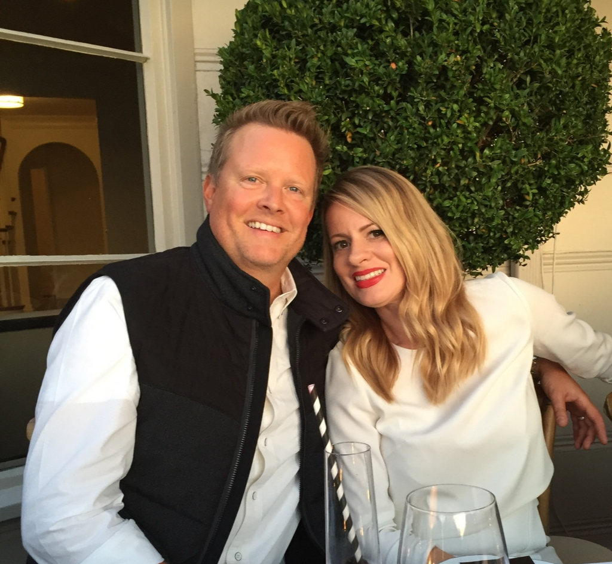

CFO · Fractional CEO/CFO · Founder-Operator · Greater Seattle Area
25+ years building, scaling, financing, and turning around companies. Scaled from startup to $30M+ ARR and more than $200M in cumulative revenue, with a career-long focus on finance, operations, technology, and systems.

I've spent my career in the ownership and executive seats — building companies, managing capital, leading teams, and making decisions when the answers weren't obvious.
That perspective shapes how I approach finance: visibility, stronger systems, a clear read on the economics, and financial information turned into executive action.
Legal and commercial strategy has been a meaningful part of that work. Over 25+ years I've worked closely with specialized outside counsel across contracts, employment, transactions, and regulatory matters — staying deeply involved in analysis, drafting, negotiation, and risk while retaining responsibility for the business judgment behind the decision.
I've scaled a company from zero to $30M+ ARR, built teams of 200+, raised growth capital, and evaluated private-equity acquisition offers from the ownership seat. Most recently I helped deliver a transformation from a $242K net loss to $2.34M net profit as revenue grew from $5.1M to $9.2M, with financial records and controls tested through three forensic accounting reviews with minimal corrective adjustment.
Complex situations with high stakes and no clear playbook are where I do my best work.
Technology & AI
At Nike World Headquarters, I was designated a Corporate Information Technology “Super User,” working between developers, business teams, retail operations, employees, and customers during new-system implementations. I built and led Nike Retail Special Orders and helped develop its early internet-based purchasing capability during Nike's transition toward retail e-commerce.
Later, as a founder and CEO/CFO, I directly led strategy, innovation, technology implementation, and business systems while scaling operating companies.
Today, that work extends into AI systems, agentic workflows, automation, technology strategy, and integrating AI into finance, operations, research, and executive decision-making.
Nike
Corporate IT Super User
Business ↔ technology translation and early internet commerce.
MIT Sloan
Executive Education
Management · Innovation · Technology · AI
BlackBoxx.ai
AI Systems Lab
Agents · Automation · Orchestration · Integration
Independent AI Systems Lab · Since October 2023
Principal | AI Systems and Automation Architect
BlackBoxx.ai is an independent AI Systems Lab focused on building and pressure-testing practical agentic systems, automation, orchestration, and AI integration across real-world business workflows.
I design and test multi-agent systems, agent specialization, AI/tool integration, workflow automation, and AI-enabled operating systems — applying emerging capabilities to finance, research, executive decision support, operations, and business-process automation.
Explore BlackBoxx.ai →Career
Independent fractional executive and strategic finance practice serving founder-led, PE-backed, and growth-stage companies navigating growth, turnaround, capital needs, operational complexity, and ownership transition.
Multi-state turnkey engineering and construction provider of backbone, middle mile, and FTTH fiber optic broadband infrastructure — including federal BEAD and AI infrastructure programs.
Independent AI Systems Lab building and pressure-testing practical agentic systems, automation, orchestration, and AI integration across real-world business workflows — applied to finance, research, executive decision support, operations, and business-process automation. blackboxx.ai →
Founded and operated a premium custom home building company serving high-end residential markets. Managed complex construction job costing, project-level P&L, WIP accounting, and cash flow across multiple concurrent builds. Board member, Central Washington Home Builders Association.
Founded and built Washington State's premier professional flooring and design company. An industry-leading AEC firm serving the Greater Seattle market's largest and most prestigious builders, including Fortune 500 clients across the Pacific Northwest.
Co-founded a flooring and design business that evolved into a national network of independently owned stores organized as a buying group. Secured national contracts with the largest flooring manufacturers in the US, built a private label program, and developed a national sales agent network spanning multiple states.
Promoted from NikeTown Portland to Nike World Headquarters at age 22 to create, centralize, and lead Nike Retail Special Orders for all U.S. Nike Retail, Outlet, and Employee Stores.
Built the national operating model, workflows, and systems for sourcing products unavailable through individual stores; traveled to NikeTown locations and new-store openings to train teams and support national rollout.
Helped develop Nike Retail Special Orders' early internet-based purchasing capability — an early operational foundation in Nike's transition toward retail e-commerce — and was designated a rare Corporate IT “Super User,” working between IT, business leadership, developers, retail operations, employees, and consumers during new-system implementations.
KSIG Advisors
KSIG Advisors is my independent fractional CEO/CFO and strategic finance practice, serving founder-led, PE-backed, and growth-stage businesses navigating growth, turnaround, capital needs, financial transformation, and ownership transition.
KSIG maintains relationships across M&A, capital, legal, accounting, technology, and operations, and can coordinate additional specialist resources when an engagement requires them.
Visit KSIG Advisors →Fractional CFO Leadership
FP&A, cash forecasting, financial reporting, lender and investor readiness, capital planning, board reporting, and finance systems.
Strategic Finance & Turnaround
Margin improvement, working capital, restructuring, KPI architecture, and pricing and cost optimization.
Exit Readiness
Financial cleanup, normalization, diligence readiness, and transaction preparation.
Credentials & Recognition
MIT Sloan
Executive Education — Advanced Certificate for Executives (ACE) in Management, Innovation & Technology · In Progress
CMA Candidate
Certified Management Accountant · Becker Professional Education · IMA
Harvard Business Review
Advisory Council — Member
Fast Company
Executive Board — Member
Shadow Ventures
Startup Advisor — AEC Technology & Built Environment
Fiber Broadband Association
AI & ML Working Group · Deployment Specialists · Middle Mile Working Group
CXO 2.0 Award
2024 Business Leadership Excellence Award
Association for Corporate Growth
Seattle Chapter · Member
Association for Financial Professionals
Member
National Small Business Association
Leadership Council · Economic Development Committee
Small Business Technology Council
Member · Leadership Council
American Bar Association
Member · Business Law, Contracts, Governance & Risk
Community
WeHeartCleElumRoslyn, SPC
A Social Purpose Corporation my wife Stacey and I founded for community advocacy in Kittitas County. When the City of Cle Elum faced a $25M+ arbitration judgment threatening municipal bankruptcy, I applied CFO-level financial analysis — advocating publicly for receivership and organizing a PAC to restructure city governance.
Education
MIT Sloan Executive Education
Advanced Certificate for Executives (ACE) · Management, Innovation & Technology
In Progress
CMA Candidate
Institute of Management Accountants · Becker Professional Education
In Progress
University of Washington
Finance & Business Management Coursework
University of Oregon
Lundquist College of Business · Business Administration & Management Coursework · 1993–1997
Where I Come From
"The people who build lasting things do it through will, over time, without a safety net."
My story starts before I was born. My father, Siegmar Karl Ohlemann, escaped East Germany at 14 — separated from his parents and brother, crossing into the West with nothing. He made his way to Canada, became the fastest 800 meter runner in North America, won Silver at the Pan American Games, and carried Canada's closing ceremony flag at the 1960 Rome Olympics.
He trained under Bill Bowerman at the University of Oregon alongside a young Phil Knight, and remained a lifelong friend of both men. He's named in Bowerman and the Men of Oregon — the book that documents the founding of Nike.
My grandfather on my mother's side, Nils Bernard Hult, was a businessman and philanthropist whose impact was permanent enough that the Hult Center for the Performing Arts in Eugene, Oregon carries his name today.
I grew up inside two legacies: a man who built everything from nothing across three countries, and a man who built something that outlasted him. That combination shapes how I think about building businesses.
Married to Stacey for over 28 years. Three daughters. A miniature goldendoodle named Rover. We renovated a circa 1888 home in Roslyn, Washington — one of the most unique small towns in the Pacific Northwest — where we are proud full-time residents.
I'm currently open to the right full-time CFO or senior executive finance opportunity, fractional CEO/CFO engagements, and select strategic advisory roles.
If you're looking for an experienced operator who can connect finance, strategy, operations, technology, and execution, I'm always open to the right conversation.